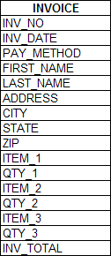
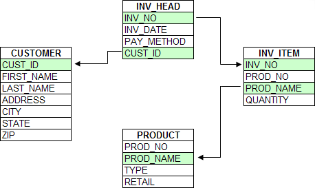

Sets vs Tables
Alpha Five is a relational database management system. A relational system allows you establish links between data in several tables.
In a flat-file system, each table is often designed to include all the relevant information required for a particular application or use (such as inventory or invoicing). This creates larger tables that often store redundant data. For example, an order entry system used to produce invoices might be composed of a single table. This tale must include fields to store both customer information and the invoice detail information that describes the items ordered. For example, the following Invoice database can have to three items per invoice.

This approach:
Limits the number of line items that you can associate with each record. You must determine how many groups of fields to include for repeating information (e.g. the invoice line items) and include these in the table.
Causes you to duplicate efforts and store redundant information. In the invoicing example, you must enter a customer's name and address each time you place an order, even though the customer information may already exist. For instance, if the customer has ordered before, the customer's information exists in another record.
Using a relational system, you can design tables to store data more efficiently. You typically create more and smaller tables and then establish links between them.
For example, an order entry system might be divided into four tables: Invoice header, Invoice item, Customer, and Product. All customer information is stored in the Customer table which contains one record for each customer. All product information is stored in the Product table. Each transaction (or invoice) is represented by a record in the Invoice Header table, and the invoice's line-items are all stored as individual records in the Invoice Items table.

By separating the invoice line items from the invoice, you can have a virtually unlimited number of line items, since they are stored as separate records in the INV_ITEM.DBF table. Since fields for invoice line-item information do not exist and are not repeated in the INV_HEAD.DBF table, no space is wasted on unused items.
Separate Customer and Product tables also helps eliminate redundant information.
See Also